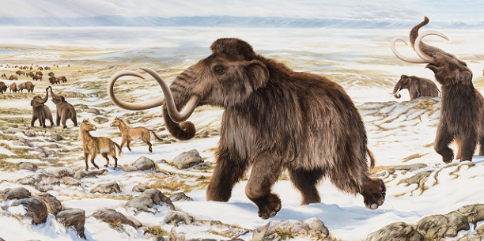

Extinción
El Pleistoceno tardío hasta el comienzo del Holoceno vio la extinción de la mayoría de la megafauna del mundo , típicamente definida como especies animales con masas corporales superiores a 44 kg (97 lb), lo que resultó en un colapso en la densidad y diversidad de la fauna en todo el mundo. Las extinciones durante el Pleistoceno tardío se diferencian de las extinciones anteriores por su sesgo de tamaño extremo hacia animales grandes (los animales pequeños se mantuvieron en gran medida intactos), la ausencia generalizada de sucesión ecológica para reemplazar a estas especies de megafauna extintas, y el cambio de régimen de las relaciones y hábitats faunísticos previamente establecidos como consecuencia.Principales Impactos y Hallazgos
- América del Norte y Sur:
- Australia:
- Eurasia:
- Factores de extinción:
Sufrieron una pérdida masiva del 73% al 80% de los géneros de grandes mamíferos hace entre 10,000 y 12,000 años.
La megafauna comenzó a desaparecer hace 40,000-50,000 años, poco después de la llegada de los humanos, incluyendo wombats y canguros gigantes.
La extinción ocurrió de manera escalonada, afectando primero a especies templadas y más tarde a especies adaptadas al frío intenso.
Los animales grandes eran más vulnerables debido a sus bajas tasas de reproducción, largos periodos de gestación y alta demanda de alimento, lo que dificultó su supervivencia ante la rápida alteración de sus hábitats y la caza.

¿Como desaparecieron los Smilodones?
La extinción de estos felinos, es un tema de grandes debates. Las hipótesis mas acertadas y mas creíbles son el cambio climático y la desaparición de sus presas potenciales. El paneta experimento cambios climáticos y esto afecto duro a muchas especies y esto extinguio al smilodon. Este carnívoro estaba especializado para cazar presas de mayor peso y tamaño (como los toxodontes), y al desaparecer esto provoco la escacez de alimento. Otra hipotesis es por el hombre, pero esta es menos probable. Es cierto que el hombre extinguio a muchos animales pero hace 11,000 años non representaban ninguna amenaza.

Smildones Antes y durante su extinción(Prehistoric Park, Impossible Pictures(2006))
¿Que extinguio a los Mamuts?
Este es un tema que esta en debate, y no se sabe con certeza que acabo con ellos. Muchos apuntan al cambio climatico, lo que hacia que sus rebaños empezaran a reducirse. La otra teoria es mas popular, en la que fueron los humanos primitivos (conocidos como neandertales) quienes los acabaron, ya que ahi los cazaban en maza. En la actualidad muchos animales los cazan por codicia y ambicion. Lo cual es triste, y tambien en el pasado, ya que en el pasado era para sobrevivir.

Humanos Primitivos cazando mamuts(Walking with Beasts, BBC(2001))
Hace 4,000 años, cuando se construyeron las piramides de egipto, el ultimo mamut murio, y la especie dejo de existir.Christopher Plummer
Likes: 0